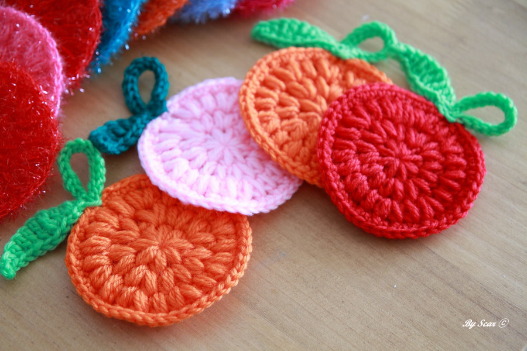

한 것
1.실팔찌
실팔찌는 친구들과 공방에 가서 우정팔찌로 만든 것이다.
생각보다 만드는 방법도 쉬웠고, 친구들과 다같이 만들어서 더 재미있었던 것 같다.
2.클레이
고3 겨울방학 때 만든 친구들이다. 방학 때 마다 친구들이 추가되고 있다.
보통 카카오프렌즈의 캐릭터를 만들고 있으며, 모든 카카오프렌즈를 만드는 것이 목표이다.
할 것
1.양모펠트

이것은 고2 마지막 기말고사가 끝난 이후에 친구들이 만드는 것을 보고 관심이 생겼다.
또한 요즘 보고 있는 웹툰 '모퉁이 뜨개방'에서 주인공 캐릭터가 양모펠트 인형이기 때문에 꼭 만들어 보고 싶다.
2.코바늘
이는 고3 겨울방학 때 시작했었다. 그러나 자꾸 실패하는 바람에 실이 모자라서 못하게 됐다.
그렇기 때문에 이번 방학에는 실을 다시 사서 보틀케이스를 만들 것이다.